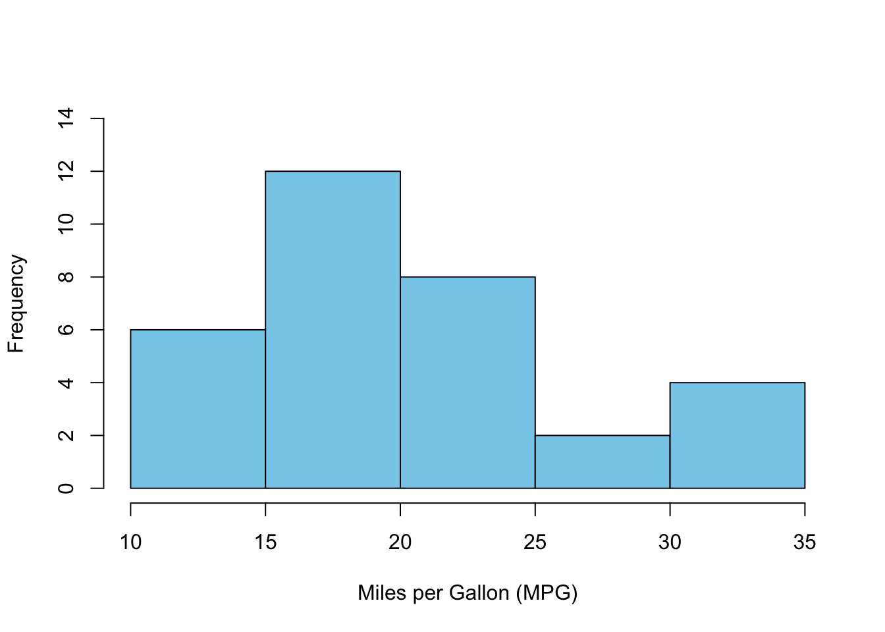

Click to show/hide code
mtcars$mpg [1] 21.0 21.0 22.8 21.4 18.7 18.1 14.3 24.4 22.8 19.2 17.8 16.4 17.3 15.2 10.4
[16] 10.4 14.7 32.4 30.4 33.9 21.5 15.5 15.2 13.3 19.2 27.3 26.0 30.4 15.8 19.7
[31] 15.0 21.4October 8, 2024
Collected data possess many observations that we are not interested in each one individually.
Instead, we are interested in summarizing the data in a concise and informative way.
Descriptive measures are single numbers that summarize the data.
They are used to describe the center and spread of the data.
They can be calculated from the data of a sample or a population.
Descriptive measures calculated from the sample are referred to as sample statistics, while those calculated from the population are referred to as population parameters.
Measures of central tendency are used to describe the center of the data (i.e., the average or typical value).
They are also referred to as measures of location.
The most common measures of central tendency are the mean, median, and mode.
It is calculated by summing all observations and dividing by the total number of observations.
Let \(X\) is a random variable:
The mean of a finite population of size \(N\) is denoted by \(\mu\), which reads as mu, while the mean of a sample of size \(n\) is denoted by \(\bar{x}\), which reads as x-bar.
The population and sample means can be calculated as follows:
| Population mean | Sample mean |
|---|---|
| \(\mu = \displaystyle \frac{x_1 + x_2 + \ldots + x_N}{N} = \displaystyle \frac{\displaystyle \sum_{i=1}^{N} x_i}{N}\) | \(\bar{x} = \displaystyle \frac{x_1 + x_2 + \ldots + x_n}{n} = \displaystyle \frac{\displaystyle \sum_{i=1}^{n} x_i}{n}\) |
Example: consider the variable mpg in the mtcars dataset that we discussed in earlier chapters:
[1] 21.0 21.0 22.8 21.4 18.7 18.1 14.3 24.4 22.8 19.2 17.8 16.4 17.3 15.2 10.4
[16] 10.4 14.7 32.4 30.4 33.9 21.5 15.5 15.2 13.3 19.2 27.3 26.0 30.4 15.8 19.7
[31] 15.0 21.4The number of observations can be calculated using the length() function:
The sum of all values can be calculated using the sum() function:
\(\bar{x} = \displaystyle \frac{21 + 21 + 22.8 + \ldots + 21.4}{32} = \frac{642.9}{32} \approx 20.09\)
The mean can be calculated directly using the built-in R function mean():
If the variable contains missing values, the na.rm argument should be set to TRUE to exclude them before calculating the mean, otherwise, the result will be NA.
For example, consider the following variable with some missing values \((1,\ 2,\ 3,\ \text{NA},\ 5)\):
mean() function without the na.rm argument will return NA:na.rm argument to TRUE:The mean can be calculated if the values are given along with their frequencies as weighted mean:
\[ \bar{x} = \displaystyle \frac{f_1x_1 + f_2x_2 + \ldots + f_kx_k}{f_1 + f_2 + \ldots + f_k} = \displaystyle \frac{\displaystyle \sum_{i=1}^{k} f_ix_i}{\displaystyle \sum_{i=1}^{k} f_i} \]
The weight of each observation \(\displaystyle w_i = \frac{f_i}{\displaystyle \sum_{i=1}^{k} f_i}\), therefore, the above equation can also be written as \(\bar{x} = \displaystyle \sum_{i=1}^{k} w_ix_i\)
Example: consider the following variable with values \((1.3,\ 2.1,\ 3.5,\ 4.1,\ 5.2)\) and frequencies \((2,\ 3,\ 1,\ 4,\ 2)\):
\[ \bar{x} = \displaystyle \frac{2 \times 1.3 + 3 \times 2.1 + 1 \times 3.5 + 4 \times 4.1 + 2 \times 5.2}{2 + 3 + 1 + 4 + 2} = \]
\[ \frac{2.6 + 6.3 + 3.5 + 16.4 + 10.4}{12} = \frac{39.2}{12} \approx 3.27 \]
It can also be calculated using the weights as follows:
The built-in R function weighted.mean() can be used for direct calculation:
\[ \displaystyle \sum_{i=1}^{n} (x_i - \bar{x}) = 0 \]
The sum of the squared deviations of the observations from a certain value is the least (i.e., minimized) when this value is the mean (this is referred to as the least squares principle).
If a constant \(c\) is added to each observation, the mean is also increased by \(c\), i.e., the mean of \(x_i + c = \bar{x} + c\).
If the observations are multiplied by a constant \(c\), then the mean is also multiplied by \(c\), i.e., the mean of \(cx_i = c\bar{x}\).
If the observations \(x_1, x_2, \ldots x_n\) are linearly transformed, where \(y_i = a + bx_i\) (\(a\) and \(b\) are known constants), then it holds that \(\bar{y} = a + b\bar{x}\).
The mean is sensitive to extreme values (outliers), and it may not be a good measure of central tendency in the presence of outliers.
Example: consider the following variable with values \((32.1,\ 34.5,\ 33.6,\ 37.2,\ 39.4)\) the mean is calculated as follows:
Lets replace the last value with an extreme value of \(250.1\), so the values would be:
The mean of the new values with the outlier would be:
The presence of the outlier affected the mean that it is no longer a good measure of central tendency for this variable.
The median, denoted by \(\large \tilde{x}_{0.5}\), is the value which divides the ordered observations into two equal parts (i.e., at least 50% of the values \(\ge\) the median and at least 50% of the values \(\le\) the median).
The median is calculated as follows:
If the number of observations is odd, the median is the middle value of the ordered observations.
If the number of observations is even, the median is the arithmetic mean of the two middle observations.
\[ \tilde{x}_{0.5} = \begin{cases} x_{\frac{n+1}{2}} & \text{if $n$ is odd} \\ \\ \frac{1}{2}(x_{\frac{n}{2}} + x_{\frac{n}{2}+1}) & \text{if $n$ is even} \end{cases} \]
Consider the following set of observations: \((3, 5, 7, 7, 7, 9, 11)\).
There is an odd number of observations \(n = 7\), so the median is the middle value of the ordered observations, which is ranked \(\displaystyle \frac{n+1}{2} = \frac{7+1}{2}=4^{th}\) and its value is \(7\).
Half of the measurements \((3, 5, 7)\) are below or equal to \(7\), and half of the measurements \((7, 9, 11)\) are equal to or above \(7\).
Therefore, the previous defintion of the median contains “equal to” to cover the case of having repeated, similar values.
Example: the variable mpg has \(32\) observations, so the median is the arithmetic mean of the two middle observations (i.e., the mean of the ordered observations ranked \(\displaystyle \frac{32}{2} = 16^{th}\) and \(\displaystyle \frac{32}{2} + 1 =17^{th}\)):
The ordered observations are:
The \(16^{th}\) and \(17^{th}\) ordered observations are:
The median is the arithmetic mean of these two values:
The median can also be calculated using the built-in R function median():
Unlike the mean, the median is not drastically affected by extreme values (outliers).
Consider the example discussed above Listing 1:
The median of the original set of observations is:
The median of the set of observations with the outlier is:
Becuase the median is concerned with the middle value, it is less affected by the presence of the outliers than the mean.
Quantiles are a generalization of of the concept of the median.
A quantile is defined as the value that divides the ordered observations into two parts such that a certain proportion of the observations are less than or equal to the quantile.
In this sense, the median is the \(50^{th}\) quantile because at least \(50\%\) of the observations are less than or equal to the median.
Similarly, the \(20^{th}\) quantile is the value that divides the ordered observations into two parts such that at least \(20\%\) of the observations are less than or equal to the that quantile, while at least \(80\%\) of the observations are greater than or equal to that quantile.
Let \(\alpha\) be a number between \(0\) and \(1\).
The \([(\alpha \times 100)\%\) quantile is denoted by \(\large \tilde{x}_{\alpha}\).
It is defined as the value that splits the data into two parts such that at least \(\alpha \times 100\%\) of the observations are less than or equal to the quantile, while at least \((1 - \alpha) \times 100\%\) of the observations are greater than or equal to the quantile.
Deciles divide the data into \(10\) parts, corresponding to quantiles at \(\alpha = 0.1, 0.2, \ldots, 0.9\).
Quintiles divide the data into \(5\) parts, corresponding to quantiles at \(\alpha = 0.2, 0.4, 0.6, 0.8\).
Quartiles divide the data into \(4\) parts, corresponding to quantiles at \(\alpha = 0.25, 0.5, 0.75\).
Percentiles: if \((\alpha \times 100)\) takes an integer value, the quantile is referred to as a percentile (i.e, divide the data into \(100\) equal parts).
The quantiles can be obtained in R using the quantile() function.
For example, the quantiles of the variable mpg in the mtcars dataset can be calculated as follows:
By default, The function outputs the \(0^{th}\), \(25^{th}\), \(50^{th}\), \(75^{th}\), and \(100^{th}\) quantiles (i.e., the minimum, first quartile, median, third quartile, and maximum).
To get a specific quantile, use the probs argument to add a vector of the desired probabilities (i.e., \(\alpha\)). For example, the following code can be used to get the \(5^{th}\) and \(95^{th}\) quantiles:
R provides nine algorithms to calculate the quantiles, which can be specified using the type argument:
Types \(1-3\) are used for discontinuous data, while types \(4-9\) are used for continuous data.
Type \(1\) and \(3\) are used for class “Date” and for ordered factors.
Type \(7\) is the default method for continous data.
Type \(6\) is used to get results similar to SPSS, Minitab, or Graphpad Prism.
For example, the of \(25^{th}\) and \(75^{th}\) quantiles of the variable mpg in the mtcars dataset using R (type \(6\) or \(7\)), SPSS, and, Graphpad Prism are as follows:
Detailed discussion of the algorithms used to calculate the quantiles can be found here.
The mode of a set of observations is the observation that occurs most frequently compared with all other values.
A set of observations can have:
No mode (if all observations occur with the same frequency).
One mode (if one observation occurs most frequently).
More than one mode (if two or more observations occur with the same highest frequency).
Example: consider the variable cyl (number of car cylinders) in the mtcars dataset:
R has no direct built-in function to calculate the mode, but it can be calculated from the frequency table as follows:
cyl Freq
1 8 14
2 4 11
3 6 7[1] "The mode is 8 cyliners"The mode can also be calculated directly using the Mode() function from the DescTools package:
For numerical data which contains many unique values, the mode may not be a good measure of central tendency. However, if the observations are summarized in groups (e.g., frequency table or histogram), the mode can be calculated as the class interval with the highest frequency.
Example: consider the histogram of the variable mpg in the mtcars dataset:

Let \(X\) a quantitative random variable with positive and non-zero values \(x_1, x_2, \ldots, x_n\), then the geometric mean \((\bar{x}_G)\) is computed by multiplying all the values and then taking the \(n^{th}\) root of the product:
\[ \bar{x}_G = \large \sqrt[n]{x_1 \times x_2 \times \ldots \times x_n} = \left( \displaystyle \prod_{i=1}^{n} x_i \right)^{\frac{1}{n}} \]
It is less sensitive to extreme values in skewed distributions than the arithmetic mean.
Geometric mean is used for averaging data that are multiplicative in nature (e.g., percentage change and rates).
Percentage change is calculated as the difference between the final \((x_1)\) and initial \((x_0)\) values divided by the initial value, then multiplied by \(100\):
\[ \displaystyle \text{Percentage change} = \left( \frac{x_1 - x_0}{x_0} \right) \times 100 \]
Rate is the ratio of two quantities that describes how one quantity changes with respect to another (e.g., speed, growth rate, and interest rate).
Consider the following set of observations: \((4, 16, 64, 256)\).
The geometric mean is calculated as:
\[ \sqrt[4]{4 \times 16 \times 64 \times 256} = \sqrt[4]{1048576} = 32 \]
The geometric mean can be calculated using the Gmean() function from the DescTools package or the geometric.mean() function from the psych package:
Assume a bank provides the following interest rates for a three-year plan: \(3.3\%\) in the first year, \(4.5\%\) in the second year, and \(5.2\%\) in the third year.
If a client deposits \(\textdollar{500}\), the change in the amount can be calculated as follows:
| Time | Year | Amount \((\textdollar)\) | Rate \((\%)\) | Interest \((\textdollar)\) \((\text{Rate}_t \times \text{Amount}_{t-1})\) | Growth factor \((\text{Amount}_t/\text{Amount}_{t-1})\) |
|---|---|---|---|---|---|
| \(t_0\) | 0 | \(500.0\) | – | – | – |
| \(t_1\) | 1 | \(516.5\) | \(3.3\) | \(16.5\) | \(1.033\) |
| \(t_2\) | 2 | \(539.7\) | \(4.5\) | \(23.2\) | \(1.045\) |
| \(t_3\) | 3 | \(567.8\) | \(5.2\) | \(28.1\) | \(1.052\) |
The interest rate is also known as the growth rate.
The growth rate \(= (\text{growth factor} - 1) \times 100\).
The average growth factor is calculated as the geometric mean of the growth factors:
So, the average growth rate per year \(= (1.043 - 1) \times 100 = 4.3\%\).
This average growth rate can also be obtained by calculating the geometric mean of the interest (growth) rates:
However, this approach is not recommended because the interest rates can be negative (the rate decreases), which results in error while computing the geometric mean.
The total amount of money (\(A\)) can be calculated at any year using the formula: \(A_t = A_{t_0} \times (\text{average growth factor}) \large ^t\). For example, the amount at the end of the third year \(= 500 \times 1.043304^3 = \textdollar567.8\).
Calculate the average interest rate for the following four-year plan: \(10\%\), \(14\%\), \(15\%\), and \(-5\%\).
The average rate per year is \(\%\) (to one decimal place)
The average interest rate can not be computed directly by calculating the geometric mean of the interest rates because the last rate is negative.
Therefore, we calculate the average growth factor as the geometric mean of the growth factors.
Growth factor \(= \displaystyle \frac{\text{rate}}{100} + 1\)
So, the growth factors are \((1.1, 1.14, 1.15, 0.95)\).
The average growth factor is equal to:
Therefore, the average interest rate per year is \(8.2\%\).
If the observations are transformed by taking the logarithm (common or natural), the antilogarithm of the arithmetic mean of the transformed values is equal to the geometric mean of the original values.
Let \(X\) be a random variable with positive, non-zero values \(x_1, x_2, \ldots, x_n\), and \(Y\) is the transformed variable with values \(y_1, y_2, \ldots, y_n\) such that \(y_i = \log_{10}(x_i)\):
The arithmetic mean of the transformed values is calculated as:
\[ \bar{y} = \displaystyle \frac{y_1 + y_2 + \ldots + y_n}{n} = \displaystyle \frac{\log_{10}(x_1) + \log_{10}(x_2) + \ldots + \log_{10}(x_n)}{n} = \]
\[ \log_{10} \left( \sqrt[n]{x_1 \times x_2 \times \ldots \times x_n} \right) \]
\[ 10^{\bar{y}} = 10^{\log_{10} \left( \sqrt[n]{x_1 \times x_2 \times \ldots \times x_n} \right)} = \sqrt[n]{x_1 \times x_2 \times \ldots \times x_n} \]
Example: consider the following set of observations \((5,\ 9,\ 10,\ 22,\ 13, 50)\), the following table shows the original and \(log_{10}\) transformed values:
The arithmetic mean of the transformed values is:
The antilogarithm of the arithmetic mean of the transformed values is:
The geometric mean of the original values is:
The antilogarithm of the arithmetic mean of the transformed values is equal to the geometric mean of the original values.
When the original values are log transformed, the back-transformed mean is not the same as the original mean but it is the geometric mean of the original values.
On the other hand, back-transforming the median of the log-transformed values gives the median of the original values:
For the mpg variable from the mtcars dataset, the median of the log-transformed values is:
The antilogarithm of the median (back transformation) of the log-transformed values is:
The median of the original values is:
The antilogarithm of the median of the log-transformed values is equal to the median of the original values.
The harmonic mean \((\bar{x}_H)\) is the reciprocal of the arithmetic mean of the reciprocals of the observations:
\[ \displaystyle \frac{1}{n} \left( \displaystyle \frac{1}{x_1} + \displaystyle \frac{1}{x_2} + \ldots + \displaystyle \frac{1}{x_n} \right) = \displaystyle \frac{\displaystyle \sum_{i=1}^{n} \frac{1}{x_i}}{n} \]
\[ \bar{x}_H = \displaystyle \frac{n}{\displaystyle \sum_{i=1}^{n} \frac{1}{x_i}} \]
It is used for averaging data that are ratios or rates (e.g., speed or financial ratios).
If the observations do not contribute equally towards the calculation of the mean (i.e., the observations have different weights), the harmonic mean can be weighted:
\[ \text{Weighted}\ \bar{x}_H = \displaystyle \frac{w_1 + w_2 + \ldots + w_n}{\displaystyle \frac{w_1}{x_1} + \frac{w_2}{x_2} + \ldots + \frac{w_n}{x_n}} = \displaystyle \frac{\displaystyle \sum_{i=1}^{n} w_i}{\displaystyle \sum_{i=1}^{n} \frac{w_i}{x_i}} = \displaystyle \frac{1}{\displaystyle \sum_{i=1}^{n} \frac{w_i}{x_i}} \]
Example: consider the following set of observations \((2, 4, 6, 8)\):
The harmonic mean is calculated as:
The harmonic mean can also be calculated using the Hmean() function from the DescTools package or harmonic.mean() function from the psych package:
The harmonic mean is used to calculate some statistical measures such as F1 score used to assess the performance of logistic regression models. In addition, it is used during pairwise multiple comparisons.
A car travels \(100\ \text{km}\) at a speed \(60\ \text{km/h}\), \(100\ \text{km}\) at \(70\ \text{km/h}\), \(100\ \text{km}\) at \(90\ \text{km/h}\), and \(100\ \text{km}\) at \(100\ \text{km/h}\). Calculate the average speed of the car.
The arithmetic mean of the speed \(= \displaystyle \frac{60 + 70 + 90 +100}{4} = \frac{320}{4} = 80\) km/h.
However, this method ignores the time taken to travel each distance.
The time taken to travel each distance is given in the following table:
| Speed (km/h) | Distanc (km) | Time (h) [Distance/Speed] |
|---|---|---|
| \(60\) | \(100\) | \(1.666667\) |
| \(70\) | \(100\) | \(1.428571\) |
| \(90\) | \(100\) | \(1.111111\) |
| \(100\) | \(100\) | \(1\) |
The total distance traveled is \(400\) km, and the total time taken is \(5.21\ \text{h}\) So, the actual average speed \(= \displaystyle \frac{400}{5.206349} \approx 76.83\ \text{km/h}\).
This average can be found using the harmonic mean of the speeds:
The average speed can also be calculated as the weighted arithmetic mean using weights based on the time taken to travel each distance:
To find the average of rates with different numerators but the same denominator use the arithmetic mean or weighted harmonic mean (weights are based on numerators).
To find the average of rates with same numerators but different denominators use the harmonic mean or weighted arithmetic mean (weights are based on denominators).
To find the average of rates with different numerators and denominators use the weighted arithmetic mean (weights are based on denominators) or weighted harmonic mean (weights are based on numerators).
Suppose that you invested \(\textdollar{2550}\) in stock market. In the first year, you spent \(\textdollar{1000}\) to purchase \(40\) shares of stock \(A\). In the second year, you spent \(\textdollar{1550}\) to purchase \(78\) shares of the same stock. Calculate the average price per share.
The rate here is the price \((\textdollar)\) per share.
The total amount of the shares bought \(= 40 + 78 = 118\) shares, so the actual average price per share \(= \displaystyle \frac{2550}{118} \approx \textdollar{21.61}\).
In the first year, the price per share \(= \displaystyle \frac{1000}{40} = \textdollar{25}\).
In the second year, the price per share \(= \displaystyle \frac{1550}{78} \approx \textdollar{19.87}\).
| Year | Price per share \((\textdollar/\text{share})\) | Amount invested \((\textdollar)\) | Number of shares |
|---|---|---|---|
| \(1\) | \(25.00\) | \(1000\) | \(40\) |
| \(2\) | \(19.87\) | \(1550\) | \(78\) |
The arithmetic mean of the price per share \(= \displaystyle \frac{25 + 19.87}{2} = \displaystyle \frac{44.87}{2} = \textdollar{22.44}\), which is higher than the actual average price per share.
Because both the numerator (amount invested) and denominator (number of shares) are different, the weighted arithmetic or weighted harmonic mean should be used to calculate the average price per share:
The weighted arithmetic mean using denominator (number of shares) as weights:
The weighted harmonic mean using numerators (amount invested) as weights:
The observations are arranged based on magnitude, then a certain percentage of the observations are removed from both ends of the ordered observations.
The trimmed mean \((\bar{x}_T)\) is then calculated as the arithmetic mean of the remaining observations.
Typically, \(5\%\) to \(25\%\) of the observations are trimmed from each end.
The trimmed mean is less sensitive to outliers than the arithmetic mean becuase the extreme values are removed.
Some robust statistical tests use the trimmed mean such as Yuen’s test, which is used to compare the trimmed means of two groups when the assumption of normality is violated.
Trimmed mean can be calculated in R using the mean() function with the trim argument set to the percentage of observations to be trimmed.
Example: the \(5\%\) trimmed mean of the variable mpg in the mtcars dataset is calculated as follows:
DescTools package has a function Trim() that is an excerpt from the base function mean() but returns the trimmed data without calculating the mean:
[1] 10.4 13.3 14.3 14.7 15.0 15.2 15.2 15.5 15.8 16.4 17.3 17.8 18.1 18.7 19.2
[16] 19.2 19.7 21.0 21.0 21.4 21.4 21.5 22.8 22.8 24.4 26.0 27.3 30.4 30.4 32.4
attr(,"trim")
[1] 1 32The output shows the cleaned data after trimming \(5\%\) of the observations from each end and the location of the trimmed observations (the \(1^{\text{st}}\) and \(32^{\text{nd}}\) observations that were removed).
The percentage of trimming is multiplied by the number of observations to get the number of observations to be trimmed from each end (i.e., \(0.05 \times 32 = 1.6\) observations, which R rounds down to \(1\)).
Therefore, one observation has been removed from each end.
\(50\%\) trimming is equivalent to the median:
Discarding the extreme values leads to loss of information that can introduce bias in the estimation of the mean. Therefore, trimming should be used cautiously. It can be safely used to discard extreme values (outliers) that might be due to errors during measurement or data collection or when the extreme values are irrelevant to the rest of the data.
The observations are arranged based on magnitude, then the extreme values beyond a certain percentile threshold are replaced by these threshold values.
For example, \(5\%\) Winsorization involves replacing the values smaller than the \(5^{th}\) percentile with the \(5^{th}\) percentile value and the values larger than the \(95^{th}\) percentile with the \(95^{th}\) percentile value.
The Winsorized mean \((\bar{x}_W)\) is then calculated as the arithmetic mean of the modified observations.
The Winsorized mean is less sensitive to outliers than the arithmetic mean.
To Winsorize data, the Winsorize() function from the DescTools package can be used:
The function has probs argument that takes a vector of two values representing the lower and upper percentiles to be Winsorized (e.g., probs = c(0.05, 0.95) for \(5\%\) Winsorization).
In addition, there is type argument that specifies the algorithm to be used for calculating the perecentiles (discussed in details here).
Example: the variable mpg in the mtcars dataset is \(5\%\) Winsorized as follows:
Calculate the \(5^{th}\) and \(95^{th}\) percentiles of the variable mpg:
The quantile() function has been used to calculate the \(5^{th}\) and \(95^{th}\) percentiles of the variable mpg, which are \(11.995\) and \(31.3\), respectively. The type argument is set to \(7\), which is the default algorithm for calculating the percentiles in R for continuous data.
Display the original values in order:
Winsorize the variable mpg using the \(5^{th}\) and \(95^{th}\) percentiles:
[1] 11.995 11.995 13.300 14.300 14.700 15.000 15.200 15.200 15.500 15.800
[11] 16.400 17.300 17.800 18.100 18.700 19.200 19.200 19.700 21.000 21.000
[21] 21.400 21.400 21.500 22.800 22.800 24.400 26.000 27.300 30.400 30.400
[31] 31.300 31.300The output of the Winsorize() function shows that the two smallest values \((10.4\ \text{and}\ 10.4)\) that are smaller than the \(5^{th}\) percentile \((11.995)\) have been replaced by the \(5^{th}\) percentile. Whereas, the two largest values \(32.4\ \text{and}\ 33.9\) that are larger than the \(95^{th}\) percentile \((31.3)\) have been replaced by the \(95^{th}\) percentile.
Calculate the Winsorized mean of the variable mpg:
The Winsorized mean can be calculated directly using the function winsor.mean() function from the psych package:
Unlike trimming, Winsorization preserves some of the original information in the data. The extreme values are not totally discarded but their weight (impact) is reduced.
Daniel, W. W. and Cross, C. L. (2013). Biostatistics: A Foundation for Analysis in the Health Sciences, Tenth edition. Wiley
Heumann, C., Schomaker, M., and Shalabh (2022). Introduction to Statistics and Data Analysis: With Exercises, Solutions and Applications in R. Springer
Lane, D. M. et al., (2019). Introduction to Statistics. Online Edition. Retrieved September 14, 2024, from https://openstax.org/details/introduction-statistics